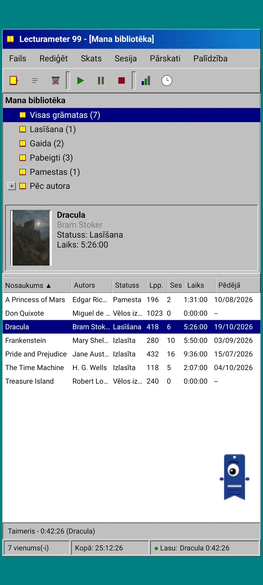
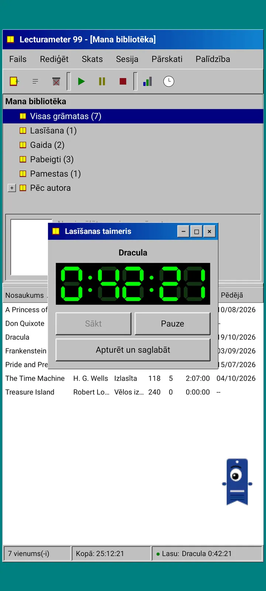
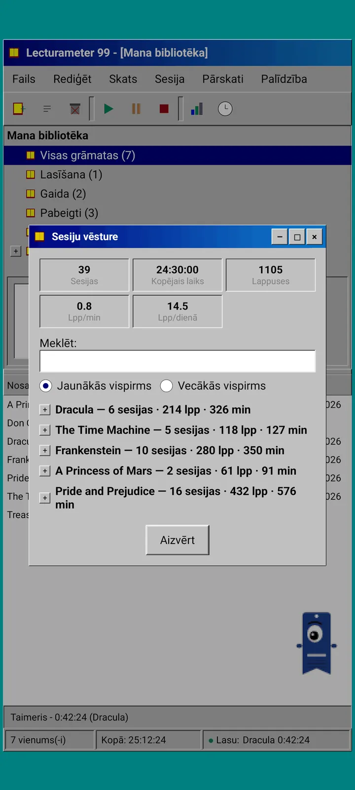
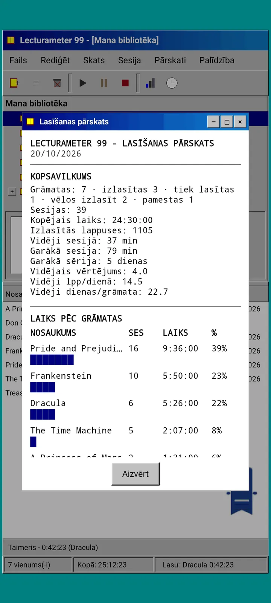

Blogs · 2026-09-24
Lecturameter 1999: kā izskatītos Lecturameter kā sena datora programma?
Alternatīva Lecturameter lietotne ar logiem, izvēlnēm, tabulām un LCD taimeri, kas atver tavas īstās dublējumkopijas. Kā tā radās, kas tajā ir un ko es tīši atstāju ārpusē. Drīz bez maksas Play Store un App Store.
Lecturameter 1999 jau dažus mēnešus vārās. Esmu to būvējis pa gabaliņiem, šur tur, bez steigas un bez plāna. Nopietni par to ķēros tikai tad, kad redzēju, ka iOS versija ir vienkāršāka, nekā gaidīju, un atstāj man vietu to pabeigt.
Tas nav vienīgais eksperiments. Prātā ir arī citi Lecturameter visuma projekti, daži diezgan tālu pavirzījušies, citi tikko iesākti. Visticamāk, lielākā daļa nekad neieraudzīs dienasgaismu.
No kurienes tas radies?
Viss sākās ar eksperimentu, ap kuru jau kādu laiku staigāju.
Ideja bija vairākas reizes no nulles pārbūvēt Lecturameter ar pilnīgi atšķirīgiem dizaina pamatnosacījumiem. Neskarot īsto lietotni un bez nodoma to aizstāt. Iznāca septiņas versijas. Viena atdarināja 2016. gada Android lietotni, otra iztēlojās, kā tas izskatītos 2036. gadā, vēl cita pārvērta bibliotēku par grāmatplauktu ar muguriņām, kas kļūst resnākas, jo vairāk lasi, un vēl viena bija veidota rokas konsolei ar diviem ekrāniem.
Vislabāk man patika 1999. Deviņdesmito gadu beigu galddatora programma: blīva, praktiska, viss logos, izvēlnēs un tabulās. Es nolēmu to pabeigt, pamazām, kā jautru vingrinājumu, un pārvērst par pilnvērtīgu lietotni ar īstajiem Lecturameter datiem apakšā.
Kas tas ir?
Lecturameter 1999 ir atsevišķa lietotne, nošķirta no Lecturameter. Kad to atver, redzi vienu maksimizētu logu virs zilganzaļas darbvirsmas. Augšā ir virsrakstjosla un izvēlnes: Fails, Rediģēt, Skats, Sesija, Pārskati un Palīdzība. Zemāk rīkjosla ar pikselētām ikonām. Centrālā daļa ir sadalīta divās: koks ar bibliotēku un priekšskatījuma panelis ar vāku, kā arī tabula ar vienu rindu katrai grāmatai. Apakšā statusa josla ar vienumu skaitu, kopējo laiku un grāmatu, ko lasi.



Tie paši dati, kas Lecturameter
Šī ir daļa, kas eksperimentu pārvērš par kaut ko lietojamu. Zem 1999. gada čaulas atrodas īstais Lecturameter datu modelis, pārkopēts tāds, kāds ir: tās pašas grāmatas, tās pašas sesijas, tie paši statusi, vērtējumi un piezīmes. Dublējumkopija, ko tā eksportē, ir tas pats fails, ko eksportē Lecturameter, un to pašu failu tā arī importē.
Praksē tas nozīmē, ka vari izvēlēties Fails, importēt savu dublējumkopiju un redzēt visu bibliotēku 1999. gada tabulā. Nedēļu palasīt ar LCD taimeri. Eksportēt. Atgriezties modernajā lietotnē ar jaunajām sesijām un pa ceļam nezaudējot nevienu lauku. Arī Goodreads CSV ieiet un iziet.
Grāmatu meklēšana ir tāda pati kā Lecturameter: tā vaicā lietotnes paša katalogam un Google Books un aizpilda nosaukumu, autoru, lappuses, ISBN un vāku. Vāks tiek postarizēts un zīmēts bez nolīdzināšanas, lai izskatītos kā tā laika GIF.
Sesijas, vēsture un pārskats
Lasīšanas plūsma ir Lecturameter plūsma, pārtulkota logos. Tabulā atlasi grāmatu un nospied atskaņošanas pogu. Atveras taimera logs ar septiņu segmentu displeju zaļā krāsā uz melna. To var pārvietot, samazināt uzdevumjoslā vai aizvērt: laiks turpina skaitīt statusa joslā.
Kad nospied apturēšanu, atveras sesijas saglabāšanas dialogs: datums, minūtes, pirmā un pēdējā lappuse, komentārs. Kopsavilkums rakstīšanas laikā izrēķina lappuses un tempu. Ja sasniedz grāmatas pēdējo lappusi, tas pajautā, vai esi to pabeidzis. Sesijas manuāli pievieno no izvēlnes Sesija.
Vēsture sagrupē sesijas pa grāmatām kokā ar plusiem un mīnusiem, ar piecām vērtībām augšā: sesijas, kopējais laiks, lappuses, lappuses minūtē un lappuses dienā. Divreiz pieskaries sesijai, lai to rediģētu, ilgi turi, lai dzēstu.
Statistika ir lasīšanas pārskats vienplatuma tekstā, it kā tas nāktu no printera: kopsavilkums ar garāko sēriju un vidējo vērtējumu, laiks pa grāmatām ar bloku joslām, ātrums lappusēs dienā, gada kalendārs, kas zīmēts ar rakstzīmēm pēc katru dienu izlasītajām lappusēm, un pēdējās septiņas dienas.



Pagi 99
Pagi dodas uz 1999. gadu arī. Tas ir tas pats vienacainais grāmatzīmes siluets, bet pikselēts, un tas brīvi klejo pa ekrānu kā tā laika biroja palīgi. Tu to velc ar pirkstu, kad tam pieskaries, tas pasaka īsu frāzi un maina izteiksmi atkarībā no tā, ko dari: domā, kamēr meklē grāmatu, lasa, kamēr skrien taimeris, un priecājas, kad saglabā sesiju vai pabeidz grāmatu.
Lietotnes padomi parādās dzeltenos balonos pie Pagi, katrs tikai vienu reizi. Ja gribi tos pārlasīt, tie ir sadaļā Palīdzība, Dienas padoms.



Kas paliek ārpusē
Lecturameter 1999 ir tīši vienkāršāka. Tas ir eksperiments, un principā pēc izlaišanas tas netiks tālāk attīstīts. Jaunās funkcijas turpinās nākt uz Lecturameter.
Būvējot es nolēmu, ka viss, kas neietekmē lasīšanas plūsmu, paliek ārpusē. Tāpēc Lecturameter 1999 nav Pro. Ko redzi, to arī iegūsti.
Lecturameter 1999 tiks izlaists visās valodās, kuras atbalsta Lecturameter.
Kad?
Tas nonāks Play Store un App Store bez maksas pēc tam, kad iznāks Lecturameter iOS ierīcēm un versija 3.7. Tas ir pabeigts un darbojas manā tālrunī. Pirms publicēšanas vēl jāpārbauda ar manu īsto bibliotēku un jāpabeidz pēdējās detaļas. Kad tas būs pieejams, paziņošu šeit, platformā X un Reddit.
Pa to laiku Lecturameter joprojām ir Lecturameter, ar saviem motīviem, izaicinājumiem un bingo. 1999. gada izdevums ir cits veids, kā skatīties uz tiem pašiem datiem.
Kamēr gaidi, Lecturameter Android ierīcē
Lasi tālāk: Lecturameter 1999 · Lasīšanas laiks vai lappuses · Lasīšanas taimeris